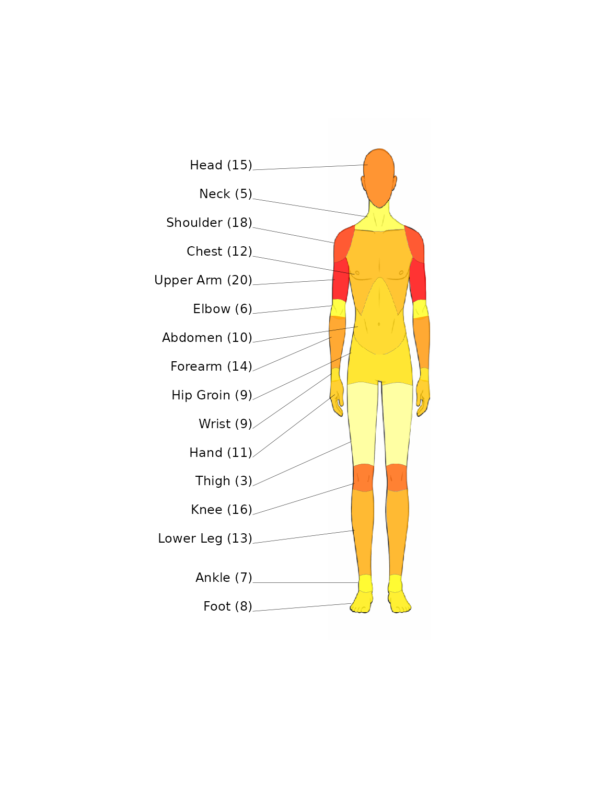
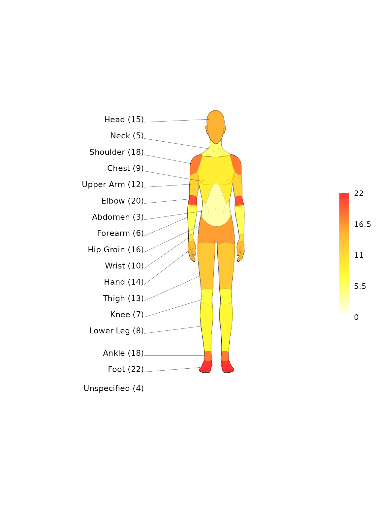

spinviz produces two kinds of injury visualisations:
-
Heatmaps of injury frequency projected onto
human-body diagrams (
heatmap_diagram()), with front, back, or both views and male or female body templates. -
Interactive sunburst diagrams of tissue/pathology
classifications (
sunburst_diagram_echarts()), built on echarts4r.
Data format
The package expects a data frame with two descriptor columns followed by one or more columns of injury frequencies (one per sport or cohort).
Heatmap data
| region_area | subcategory | sport1 |
|---|---|---|
| Head and Neck | Head | 10 |
| Head and Neck | Neck | 20 |
| Upper Limb | Shoulder | 5 |
| Upper Limb | Upper Arm | 8 |
The 18 recognised subcategories and their region_area
groupings are available as the built-in body_categories
taxonomy.
Sunburst data
For the sunburst, the first two columns are tissue and
pathology:
| tissue | pathology | sport1 |
|---|---|---|
| Muscle / Tendon | Muscle strain | 20 |
| Muscle / Tendon | Tendon rupture | 10 |
| Bone | Fracture | 16 |
| Bone | Bone contusion | 6 |
The built-in injury_categories taxonomy contains the
25-row tissue/pathology classification.
Heatmap example
subcategory <- c("Head", "Neck", "Shoulder", "Chest", "Upper Arm", "Elbow",
"Abdomen", "Forearm", "Hip Groin", "Wrist", "Hand",
"Thigh", "Knee", "Lower Leg", "Ankle", "Foot",
"Thoracic Spine", "Lumbosacral")
region_area <- rep("Example", length(subcategory))
boxing <- c(15, 5, 18, 12, 20, 6, 10, 14, 9, 9, 11, 3, 16, 13, 7, 8, 18, 22)
df <- data.frame(region_area, subcategory, boxing)Then call
heatmap_diagram(injury_data, selected_sport, view_choice),
where view_choice is one of "front",
"back", or "both":
heatmap_diagram(df, "boxing", "front", sex = "male", show_scale = FALSE)
See ?heatmap_diagram for options controlling labels,
values, opacity, the legend scale, and custom palettes. Rows with an
"Unspecified" subcategory are shown as a label below the
diagram (they have no body region to colour).
Sunburst example
The quickest way to get a correctly-ordered taxonomy is
injury_categories:
df_sb <- injury_categories
df_sb$boxing <- c(20, 0, 0, 10, 31, 18, 16, 16, 20, 20, 27, 46,
67, 31, 54, 20, 27, 30, 96, 82, 48, 26, 33, 34, 24)
sunburst_diagram_echarts(df_sb, "boxing", plot_title = "Boxing Injuries")The sunburst is interactive: tissue types sit on the inner ring,
pathologies on the outer ring. See
?sunburst_diagram_echarts for options such as
depth = 1 (tissue ring only), excluding
“Unspecified”/“Non-specific” rows, and label/radius/font tuning.
Convenience wrappers
If you use the package’s standard classifications, you can skip constructing the descriptor columns entirely and pass just a vector of counts:
heatmap_diagram_default(c(boxing, unspecified = 4), "front")
sunburst_diagram_default(df_sb$boxing, plot_title = "Boxing Injuries")Counts are matched by row position to body_categories /
injury_categories.